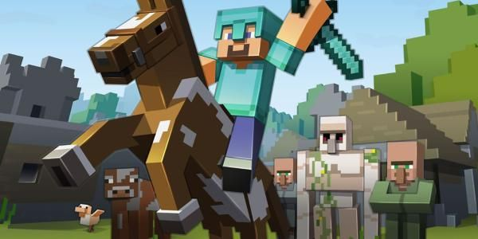

La creatividad, denominada también pensamiento original, pensamiento creativo, inventiva, imaginación constructiva o pensamiento divergente, es la capacidad de crear, de innovar, de generar nuevas ideas o conceptos, o nuevas asociaciones entre ideas y conceptos conocidos, que normalmente llevan a conclusiones nuevas, resuelven problemas y producen soluciones originales y valiosas. La creatividad es la producción de una idea o un concepto, una creación o un descubrimiento que es nuevo, original, útil y que satisface tanto a su creador como a otros durante algún periodo.
Si volteamos la vista a los últimos 20 años de la industria, queda claro que Minecraft como el principal exponente de este tipo de juegos
Y es que Minecraft tiene una premisa simple pero inédita en los videjuegos. “Sobrevive y búscate el pan” ya era común pero el hecho de que cada jugador tenga que idear algo distinto para sobrevivir a los monstruos nocturno, es lo que lo hizo que Minecraft fuera grande como obra. De esta manera, aparecía el primer survival de mundo abierto que realmente te daba libertad para hacer lo que quisieras.
Así nació lo que quizá sea el juego que más ha fomentado la creatividad directamente en la historia de esta industria tan joven. Minecraft ya supera los 100 millones de copias vendidas y contando, por lo que esa afirmación no es una exageración. Es por ello que Minecraft es el mejor exponente en este medio cuando buscamos algo que aliente la creatividad y fomente la resolución de problemas con pensamiento “fuera de la caja”.
He aqui una demostracion de lo que minecraft ha podido hacer gracias a la creatividad de los jugadores.
Registraté para saber mas de esta comunidad que esta demostrando que tan creativos son los jovenes.
para mas informacion consulta a nuestro forro de ayuda... AQUI